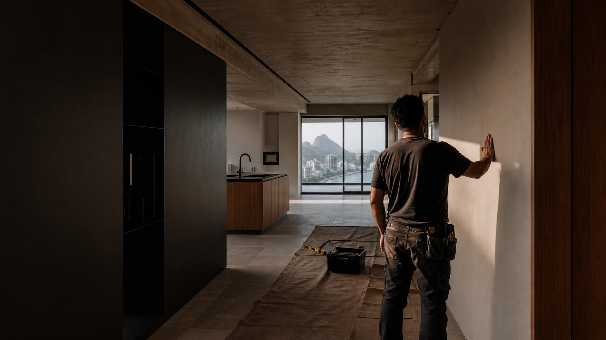
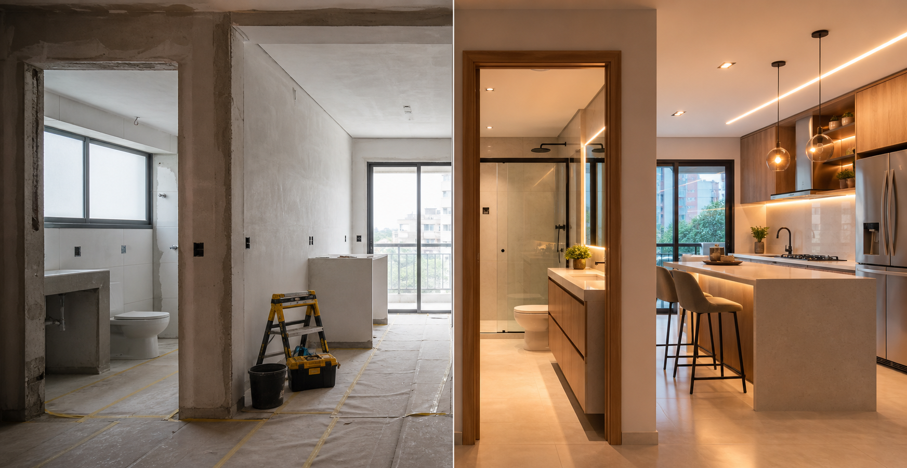
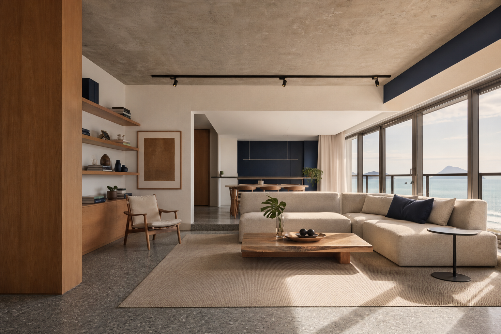
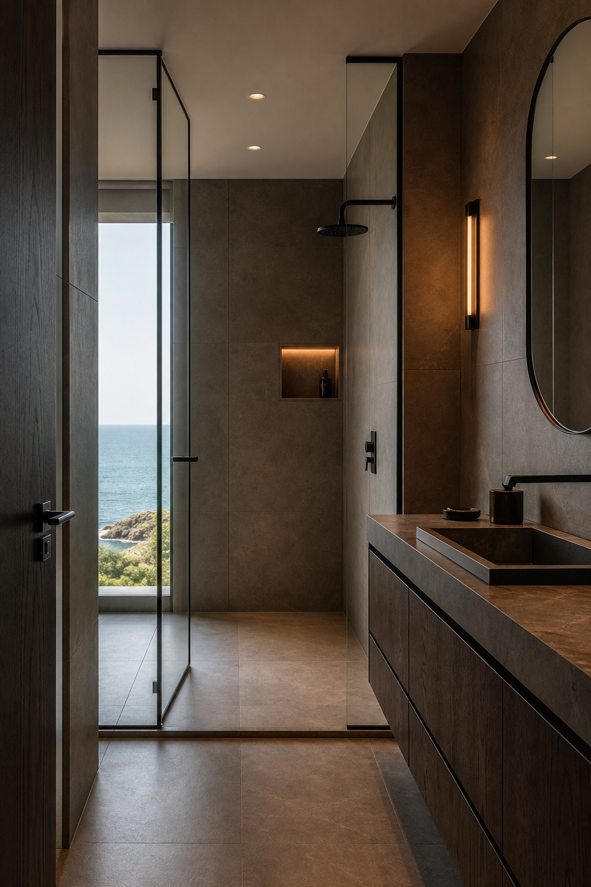
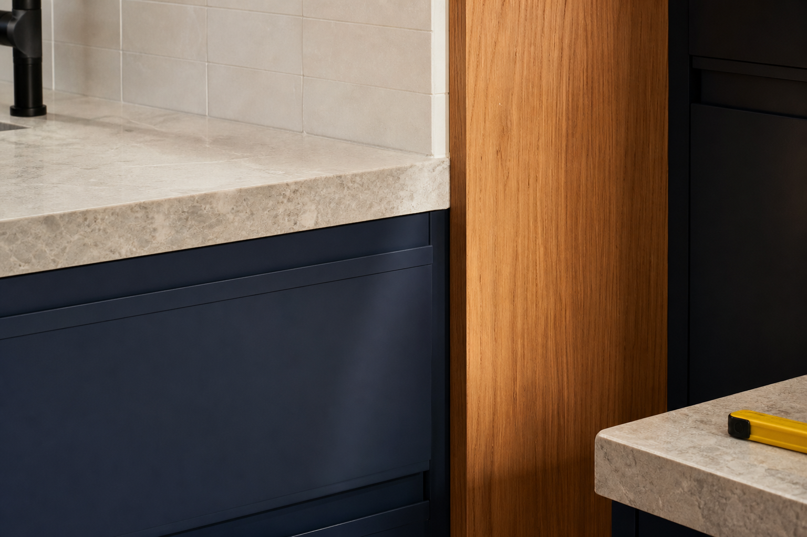
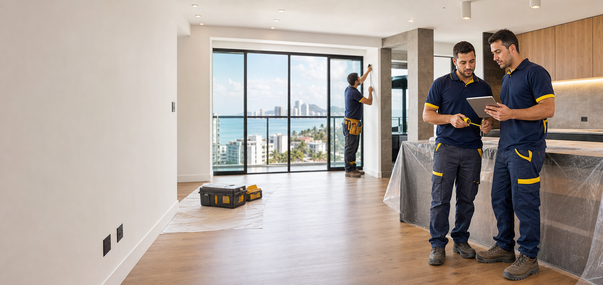

Reformas completas
Coordenação das etapas para transformar apartamentos e casas.

Reformas residenciais
Santos + Baixada Santista
Planejamento, obra e acabamento conduzidos com precisão, cuidado e conversa direta.
↗Reformar não é apenas trocar revestimentos.

Leitura do ambiente, proteção, sequência de execução e atenção aos encontros entre materiais. A qualidade final nasce dessa soma.
Uma seleção visual sobre transformação, acabamento e o cuidado que aparece nos detalhes.




Um único fluxo para organizar escopo, execução e acabamento.
Coordenação das etapas para transformar apartamentos e casas.
Aberturas, fechamentos, correções e preparação de superfícies.
Preparação cuidadosa e aplicação com acabamento limpo.
Arremates, ajustes e detalhes que definem a entrega.
Você acompanha o avanço, entende as próximas etapas e fala diretamente com quem está cuidando da execução.
Você compartilha o espaço, a necessidade e as prioridades da reforma.
Organizamos serviços, materiais, acessos e sequência de execução.
Acompanhamento direto até os últimos ajustes do ambiente.
Estamos reunindo depoimentos autorizados de clientes para publicar neste espaço. Transparência também faz parte de uma boa entrega.
Acompanhe obras, processos e resultados reais.
@matuza_reformas ↗